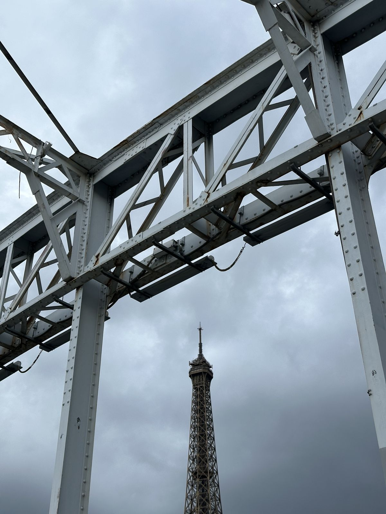
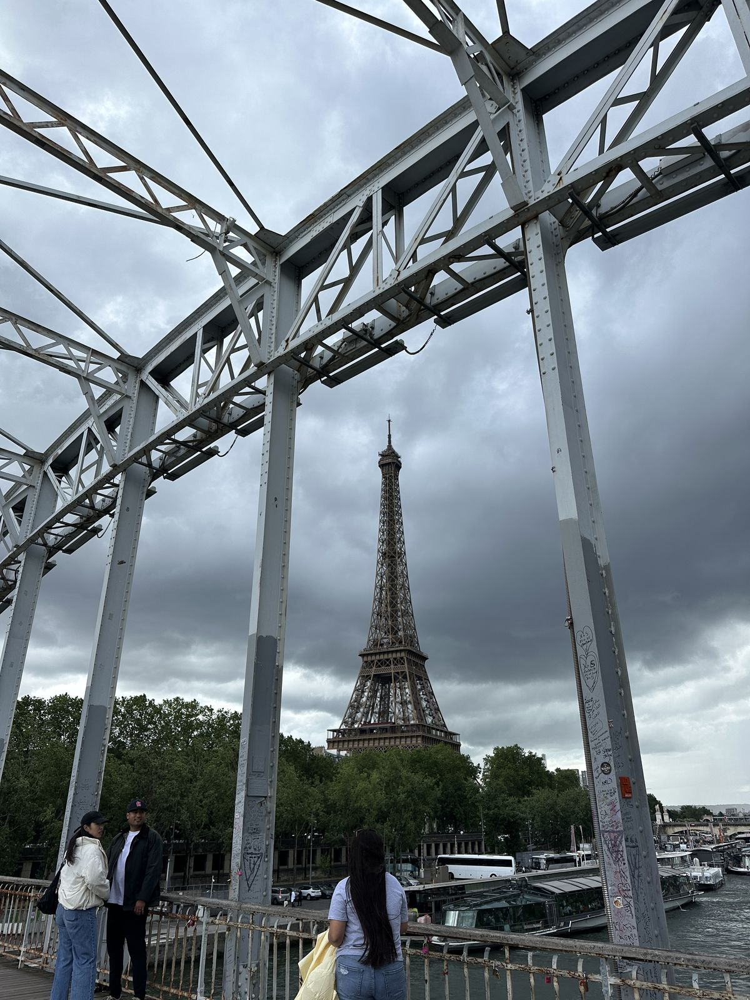
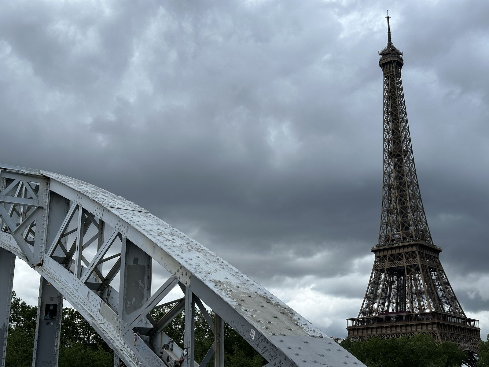
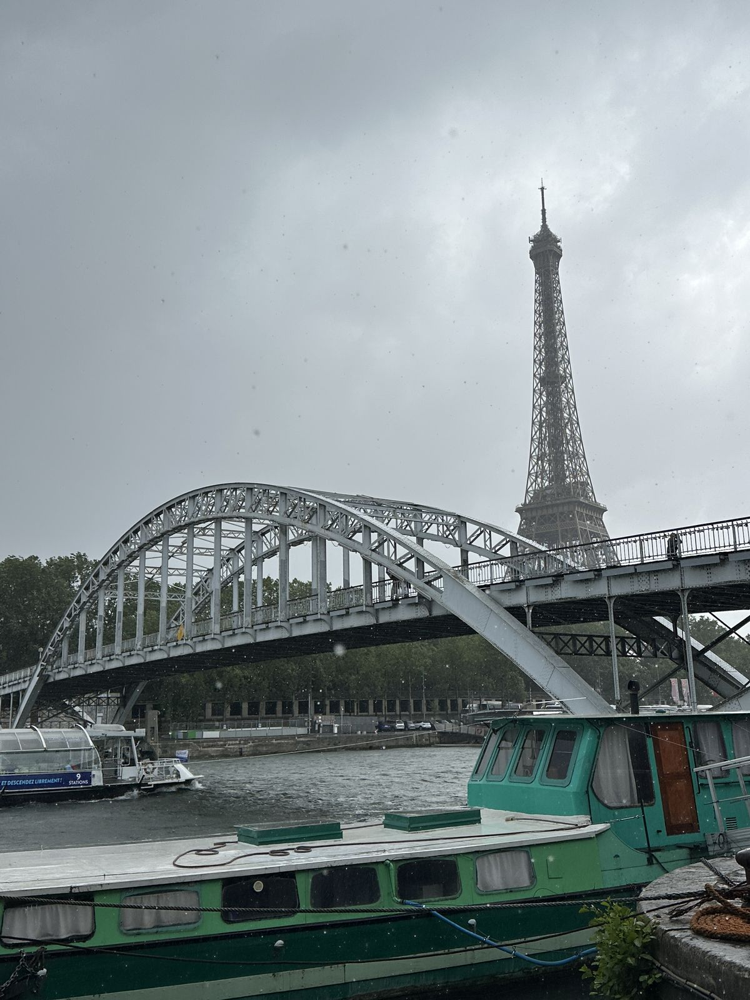
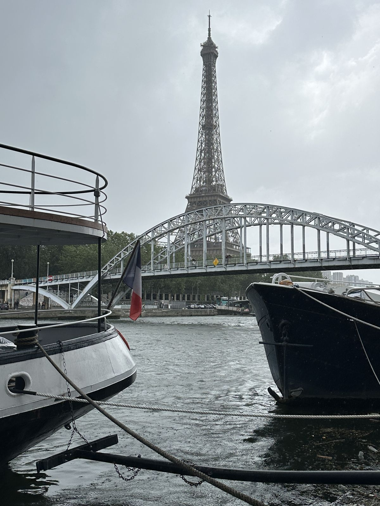
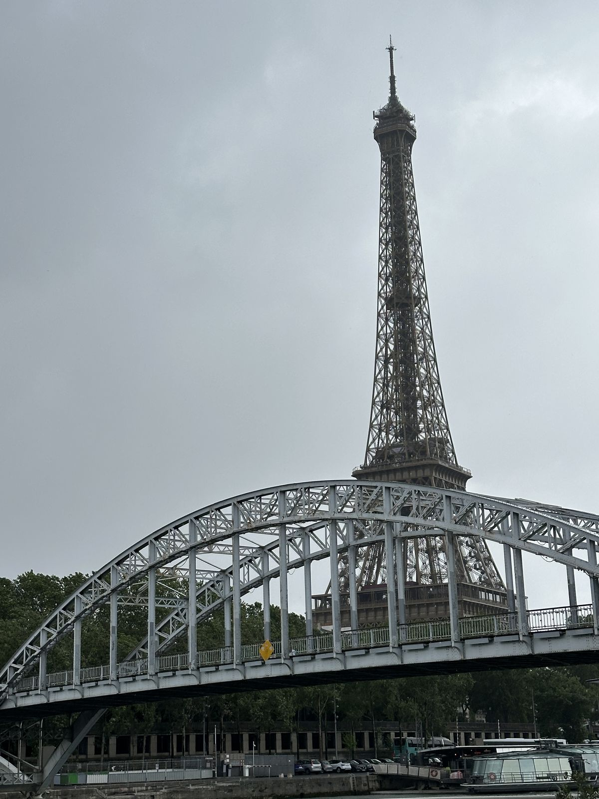
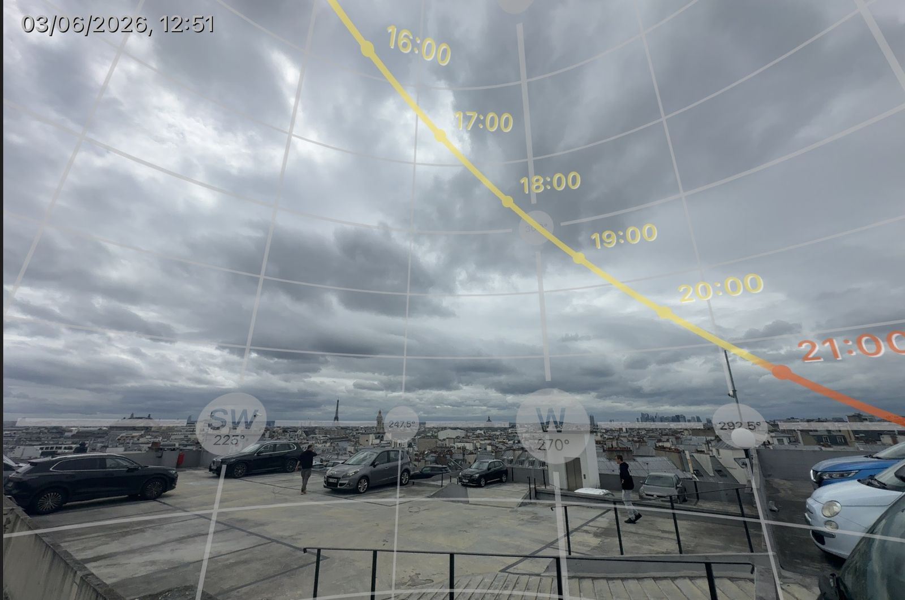
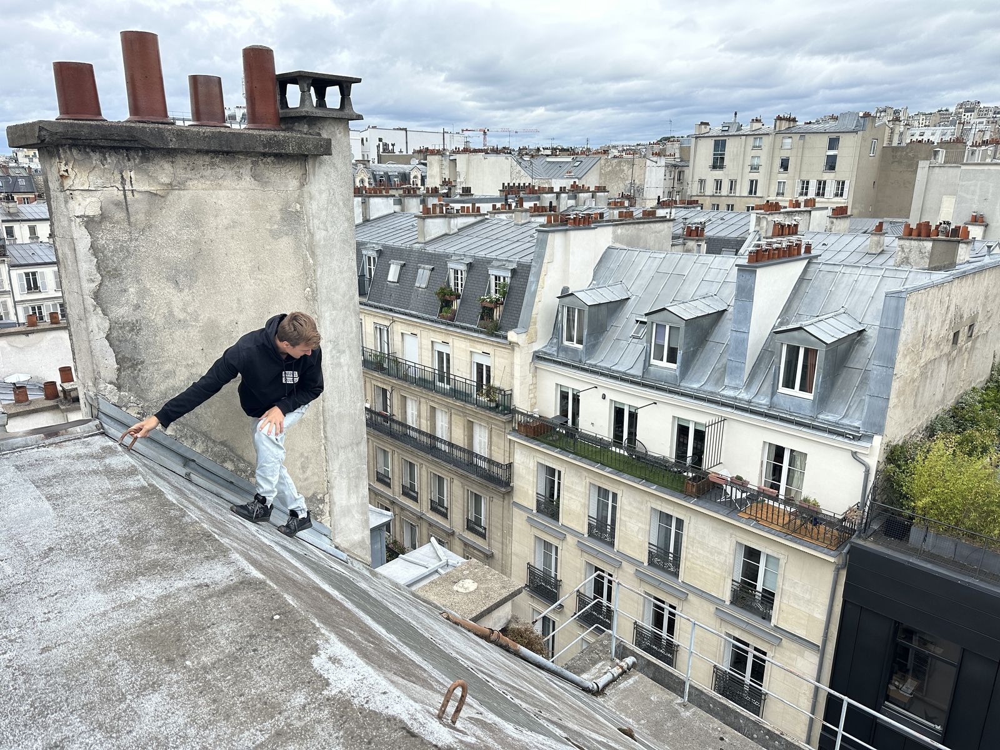
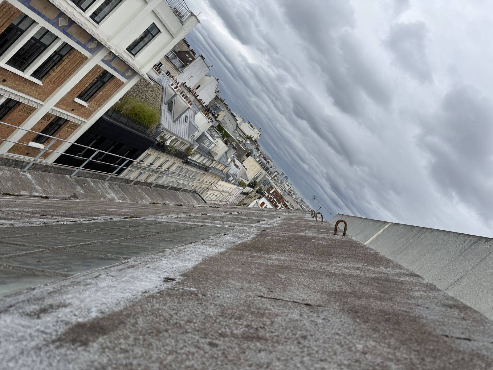
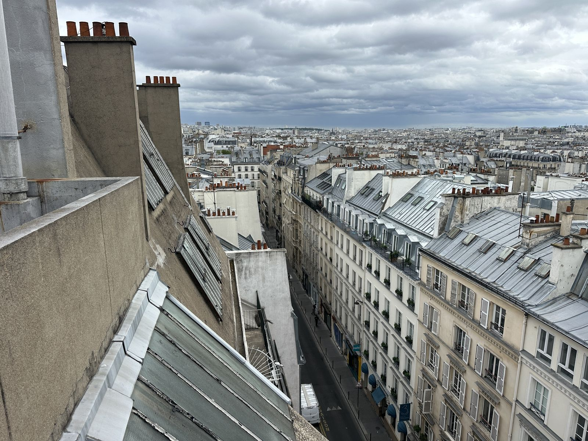

J3 J3 — Mercredi 24 juin 2026
📋 Spots du jour (3)
Spot 7 — Passerelle Debilly
🌉 SPOT 7 — PASSERELLE DEBILLY
📋 Vue d'ensemble — photos du spot
| # | Titre | Statut | Focale | Tag |
|---|---|---|---|---|
| 7.1 | Johan sur la structure du pont (illégal, zone grise) ⚠️ Zone | ✅ ACTÉE (majoritairement ça) | à arbitrer | Zone grise (dangereux) + Perf |
| 7.2 | Depuis les quais : Péniche + Pont + Tour Eiffel | ✅ ACTÉE | à arbitrer | Beauty (composition épurée signatur |
| 7.3 | Depuis bateau | ✅ ACTÉE (1-2 angles) | — | Beauty (angle inédit) |
| 7.4 | Tristan sur le pont (grand angle ou autre focale) 🟡 WIP | 🟡 WIP (à arbitrer terrain) | 35mm grand angle OU autre foca | Beauty (zone d'action proche) |
📋 Brief spot (5 infos)
Horaire planning : 🌅 24/06 04H30 → 06H00 (aube) — sauf si bateau le 25
📍 Google Maps — Passerelle Debilly
📮 Passerelle Debilly, 75007 Paris
- Lumière : 🔒 LOCKÉE aube
- Status spot : ⚠️ Zone grise — structure rappelle Tour Eiffel, Johan monte dessus (2 secondes, complètement interdit). Demande autorisation shoot mais SANS dire que Johan monte au-dessus.
- Statut : décor MAJEUR Tour Eiffel — pendant Bir-Hakeim sans ses contraintes
- Repérage 21/06 avec Mathurin : ✅ prévu (sol + simulation angles bateau depuis quais)
📷 Photo 7.1 — Johan sur la structure du pont (illégal, zone grise) ⚠️ Zone grise (dangereux)
- Tag : Zone grise (dangereux) + Perf
- Statut : ✅ ACTÉE (majoritairement ça)
- Position Tristan : depuis le pont à côté/derrière Johan
- Action Johan : dans le ciel → backflip ou sauts gracieux sur structure
- Sécurité : briefer cordistes pour assurage Johan
- Focale : à arbitrer
🖼️ 🖼️ Références 📷📷
  
📷 Photo 7.2 — Depuis les quais : Péniche + Pont + Tour Eiffel
- Tag : Beauty (composition épurée signature)
- Statut : ✅ ACTÉE
- Composition :
- 1er plan : péniche (à défaut zoom un peu)
- Plan milieu : pont qui se détache
- Arrière-plan : Tour Eiffel très lisible
- Focale : à arbitrer
- Action Johan : sur structure dans le ciel
- Mood : épuré, ombres chinoises
🖼️ 🖼️ Références 📷📷
 
📷 Photo 7.3 — Depuis bateau (contre-jour OU sens lumière)
- Tag : Beauty (angle inédit)
- Statut : ✅ ACTÉE (1-2 angles)
- Position : depuis l'eau
- 2 versions : à contre-jour OU dans le sens de la lumière
- Débloque : angles jamais shootés
🖼️ 🖼️ Référence 📷

📷 Photo 7.4 — Tristan sur le pont (grand angle ou autre focale) 🟡 WIP
- Tag : Beauty (zone d'action proche)
- Statut : 🟡 WIP (à arbitrer terrain)
- Focale : 35mm grand angle OU autre focale en se reculant un peu
Récap Debilly = 3-4 photos identifiées (zone grise + quais péniche + bateau + pont grand angle) — Beauty : 2-3 · Zone grise : 1
Spot 8 — Olympiades + Simone
🏟️ SPOT 8 — DALLE DES OLYMPIADES Paris 13ᵉ + Passerelle Simone-de-Beauvoir (session matinale couplée)
📋 Vue d'ensemble — photos du spot
📋 Brief spot (13 infos)
Horaire planning : 🌅 24/06 08H00 → 12H00 (session matinée — couvre Olympiades + Simone-de-Beauvoir à côté)
📍 Google Maps — Dalle des Olympiades
📮 Olympiades Esplanade — 64 Rue du Javelot 8, 75013 Paris
📍 Google Maps — Passerelle Simone-de-Beauvoir
📮 Passerelle Simone-de-Beauvoir, 75012 Paris (juste à côté, on enchaîne)
- Lumière : 🔒 LOCKÉE matinée 08h-12h (rasant ombres tours = graphique brutaliste pur > golden hour ; Simone-de-Beauvoir bénéficie lumière latérale jusqu'à midi)
- Status spot : ✅ ACTÉ — Olympiades : esplanade béton suspendue 8-10m + 8 tours villes JO + brutalisme 70s · Simone-de-Beauvoir : passerelle bois Feichtinger 2006 (BNF ↔ Parc Bercy)
- Accès : Métro Olympiades ligne 14 + 103-105 rue de Tolbiac (13ᵉ)
- Autorisation : « voie privée ouverte au public » — pas autorisation requise piétons + discrétion = ami (sécurité ASL peut refouler si matos volumineux)
- Repérage 21/06 avec Mathurin : ✅ prévu — nécessaire pour valider angles réels (cf disclaimer ci-dessous)
⚠️ Disclaimer photos identifiées : les 5 photos Olympiades + section Simone-de-Beauvoir ci-dessous sont des suggestions Claude basées sur DR L1 — Tristan n'a pas vu les spots empiriquement. Le repérage 21/06 avec Mathurin va confirmer / réviser / élargir cette liste sur le terrain.
Mood directeur DA
« Yamakasi 2026 grandi en éditorial » — pas reportage parkour, portrait performatif. Référence Annie Leibovitz × brutalisme Tadao Ando.
Architecture détaillée
- Esplanade béton multi-niveaux (2 sous-sols + dalle + tours)
- 8 tours villes JO max 100m (Mexico, Sapporo, Athènes...)
- Pagodes concaves sur la dalle (ex-marchés couverts asiatiques)
- Escaliers 56 marches + 28 marches + passerelles béton + planters cassés
- Accès escalators entre 2 murs rouges
- Vieillissement + graffitis + ambiance science-fiction brutaliste 70s
📷 Photo 8.1 — Saut entre 2 murets dalle + tour arrière-plan
- Tag : Beauty + Perf + Hommage parkour brutalisme
- Statut : ✅ ACTÉE
- Focale : 24-35mm wide
- Composition : Johan saut entre 2 murets dalle, plongée tour Mexico OU Helsinki en arrière-plan
- Lumière : rasante matinale
📷 Photo 8.2 — Escalier 56 marches contre-plongée
- Tag : Beauty (graphique architectural)
- Statut : ✅ ACTÉE
- Focale : 35mm
- Composition : contre-plongée Johan plein mouvement dans escalier 56 marches
- Mood : graphique pur
📷 Photo 8.3 — Sous passerelle béton + silhouette + lumière rasante
- Tag : Beauty (cinéma émotionnel)
- Statut : ✅ ACTÉE
- Focale : 50mm
- Composition : silhouette Johan saut sous passerelle béton + lumière rasante derrière
- Mood : claque émotionnelle, cinématographique
📷 Photo 8.4 — Pagode concave + tour + Johan équilibre muret
- Tag : Beauty (Paris asiatique signature)
- Statut : ✅ ACTÉE
- Focale : 24mm
- Composition : pagode concave + tour, Johan équilibre sur muret 1er plan
- Signature : seul spot Paris asiatique × brutalisme du shoot
📷 Photo 8.5 — Top dalle plein cadre béton vide + Johan figure courbe
- Tag : Beauty (minimalisme Vanity Fair éditorial)
- Statut : ✅ ACTÉE
- Focale : 35mm
- Composition : top dalle, plein cadre béton vide minimaliste + Johan figure courbe
- Mood : minimalisme INTJ Vanity Fair éditorial
Récap Olympiades = 5 photos identifiées — Beauty : 4 · Perf : 1 (8.1 saut)
🌉 Sous-section — Passerelle Simone-de-Beauvoir (sol, juste après Olympiades)
Workflow matinée : Olympiades 08h-10h30 → marche/métro 10 min → Simone-de-Beauvoir 10h30-12h. Les angles depuis bateau aube restent à faire le 25/06 (cf spot 10 — photos 10.3, 10.4, 10.5, 10.7).
Mood directeur Simone
« Parkour-architecte » — Johan extension cinétique de l'œuvre Feichtinger. Référence Iwan Baan + Yann Arthus-Bertrand × action.
Architecture détaillée
- Lentille 106m × 12m plancher chêne entre BNF + Parc Bercy
- Architecte Dietmar Feichtinger (2006)
- Azimut empirique du pont : 18° (NNE) — soleil ENE → lumière latérale rasante, pas axe frontal
- Rampes inclinées + arches métalliques + dalle bois centrale
⚠️ Disclaimer renforcé : TOUTES les photos Simone-de-Beauvoir ci-dessous sont des idées IA (Claude) NON validées empiriquement par Tristan. À aller voir sur place le 24/06 matin pour confirmer/réviser/élargir.
📷 Photo 8.6 — Lentille silhouette contre lever soleil ⚠️ idée IA non validée
- Tag : Beauty (silhouette graphique iconique)
- Position : sol côté aval Bercy face SW (ex-bateau, désormais sol uniquement)
- Focale : à arbitrer terrain
- Mood : silhouette graphique iconique
📷 Photo 8.7 — Johan saut entre 2 niveaux + ciel ⚠️ idée IA non validée
- Tag : Beauty + Perf
- Position : sous lentille, contre-plongée depuis sol
- Focale : grand angle
- Mood : vertige + scale
📷 Photo 8.8 — Profil passerelle entière + Johan run au centre ⚠️ idée IA non validée
- Tag : Beauty (architectural éditorial)
- Position : sol latéral plein travers
- Focale : 50-85mm
- Mood : architectural éditorial
📷 Photo 8.9 — Johan parkour rampes inclinées + reflets Seine ⚠️ idée IA non validée
- Tag : Beauty + Perf (action urbaine)
- Position : quai bas Bercy
- Focale : à arbitrer terrain
- Mood : action urbaine
📷 Photo 8.10 — Johan figure courbe arches métalliques ⚠️ idée IA non validée
- Tag : Beauty (tunnel optique émotionnel)
- Position : top passerelle, dalle bois centre, ras du sol
- Focale : grand angle
- Mood : tunnel optique émotionnel — Johan extension cinétique arches
Récap Simone-de-Beauvoir SOL = 5 photos à explorer (toutes idées IA, validation terrain 24/06 matin)
Hashtags inspiration à poncer
#olympiades·#parkourparis·#frenchfreerunfamily- YouTube : "Lucka Ndaye Parkour aux Olympiades et Dunois"
- Campagne mode Song for the Mute Olympiades (Creative Boom) = référence éditoriale brutaliste
Cross-réf DR L1 complet : 02- MEMORY_LOGS/DEEP_RESEARCH_REPORTS/2026-06-05_olympiades_simone_beauvoir_DR_L1.md
Spot 9 — Parking Clauzel
🅿️ SPOT 9 — PARKING CLAUZEL
📋 Vue d'ensemble — photos du spot
| # | Titre | Statut | Focale | Tag |
|---|---|---|---|---|
| 9.1 | Tourelle blanche d'accès parking | ✅ ACTÉE | variations multiples | Beauty + Perf |
| 9.2 | Coin parking petit muret + reflet flaques d'eau 🎯 KEY | ✅ ACTÉE (KEY photo de Tristan) | — | Beauty (miroir signature) |
| 9.3 | Zone centrale en hauteur | ✅ ACTÉE | grand angle privilégié | Beauty |
| 9.4 | Suspension cour bâtiment (pendant Terrass'Hôtel 4.1) ⚠️ Zone | ✅ ACTÉE (assumée par Tristan + | — | Zone grise (dangereux) (« qui fait |
| 9.5 | Zone bordure parking penché + horizon volontairement non res | ✅ ACTÉE (idée Johan apportée) | — | Zone grise (dangereux) (très penché |
| 9.6 | Cheminées toits mode Assassin's Creed Portrait Beauty 🟡 WIP | 🟡 WIP (Tristan se rappelle vag | — | Beauty + Lifestyle/Portrait |
📋 Brief spot (7 infos)
Horaire planning : 🌇 24/06 20H00 → 23H00 (coucher de soleil)
📍 Google Maps — Parking Clauzel
📮 Saint-Georges, 75009 Paris
- Lumière : 🔒 LOCKÉE coucher de soleil
- Status spot : ✅ ACTÉ — plus de monuments identifiables rapidement + facilité travail réa/photo
- Setup spécial :
- 🚰 REQUIS : jerricans d'eau + voir avec gardiens parking pour tuyau d'arrosage → reflets flaques (sol moche valorisé)
- 🛡️ Pas dangereux (vs Terrass'Hôtel), liberté de déplacement grand angle ↔ télé
- Doctrine : ramener beaucoup d'eau, créer les flaques nous-mêmes pour effet miroir
🌅 Lecture lumière (1 image)

📷 Photo 9.1 — Tourelle blanche d'accès parking
- Tag : Beauty + Perf
- Statut : ✅ ACTÉE
- Composition : Johan prend appui sur tourelle → multiples jumps et cabrioles
- Arrière-plan : vue directe Tour Eiffel
- Focale : variations multiples
- Liberté : grand angle ↔ télé selon angle
📷 Photo 9.2 — Coin parking petit muret + reflet flaques d'eau 🎯 KEY
- Tag : Beauty (miroir signature)
- Statut : ✅ ACTÉE (KEY photo de Tristan)
- Composition : Johan sur petit muret délimitation parking → backflips → eau au sol pour reflet
- Vue : Tour Eiffel + autres monuments
- Effet : miroir flaque = transformation sol moche en signature visuelle
📷 Photo 9.3 — Zone centrale en hauteur (plans sol grand angle)
- Tag : Beauty
- Statut : ✅ ACTÉE
- Composition : zone au-dessus du parking sans muret → plans sol possibles
- Focale : grand angle privilégié
- Vue : Tour Eiffel + monuments Paris
📷 Photo 9.4 — Suspension cour bâtiment (pendant Terrass'Hôtel 4.1) ⚠️ Zone grise (dangereux)
- Tag : Zone grise (dangereux) (« qui fait peur »)
- Statut : ✅ ACTÉE (assumée par Tristan + Johan)
- Composition : Johan suspendu, cour de bâtiment à vide en dessous, composition entraîne vers lui
- Sécurité : cordistes obligatoires
📷 Photo 9.5 — Zone bordure parking penché + horizon volontairement non respecté ⚠️ Zone grise (dangereux)
- Tag : Zone grise (dangereux) (très penché bord parking)
- Statut : ✅ ACTÉE (idée Johan apportée)
- Composition : zone bordure avec grip, Johan court dessus → effet perspective transformée + horizon volontairement penché
- Doctrine Johan : ne pas respecter l'horizon, le pencher volontairement pour effet visuel
🖼️ 🖼️ Références 📷📷
 
📷 Photo 9.6 — Cheminées toits mode Assassin's Creed Portrait Beauty 🟡 WIP
- Tag : Beauty + Lifestyle/Portrait
- Statut : 🟡 WIP (Tristan se rappelle vaguement zones cheminées)
- Composition : Johan monte sur cheminée → portrait Beauty domine Paris + Tour Eiffel arrière-plan
- Mode : Assassin's Creed (statique signature)
🖼️ 🖼️ Référence 📷

📌 Autres photos à explorer sur place — au-delà des 6 identifiées ci-dessus, Tristan a repéré qu'il y a plus de photos potentielles à optimiser sur Clauzel (angles, zones, compositions non encore listés). À explorer/arbitrer le jour J 24/06 soir directement avec Johan + Cyril. Pas de repérage Mathurin prévu sur ce spot.
Récap Clauzel = 6 photos identifiées + N à explorer sur place — Beauty : 3-4 · Perf : 2 · Zone grise : 2 · Lifestyle : 1